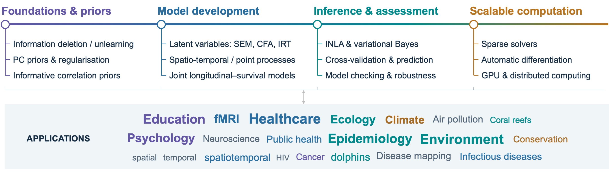
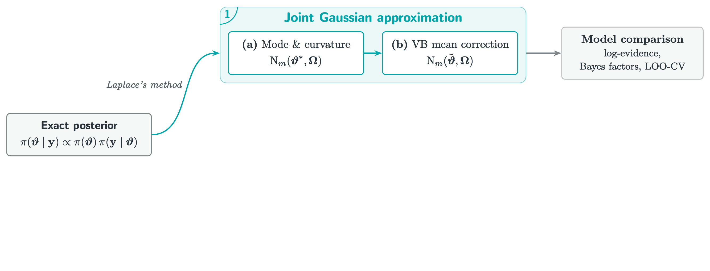
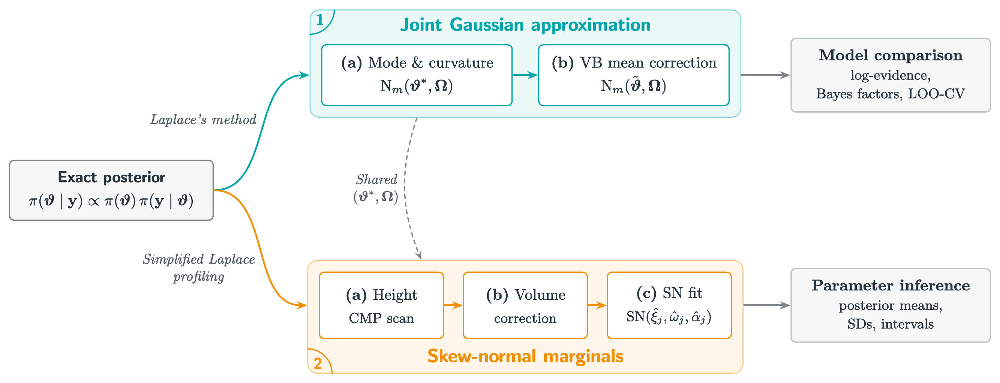
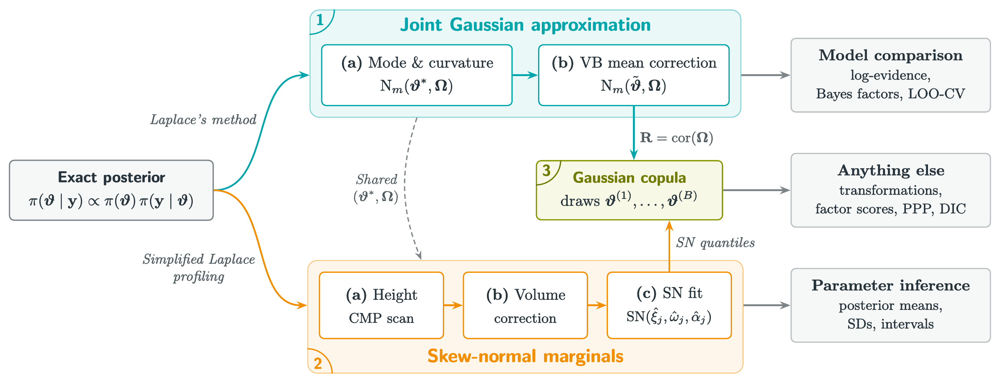
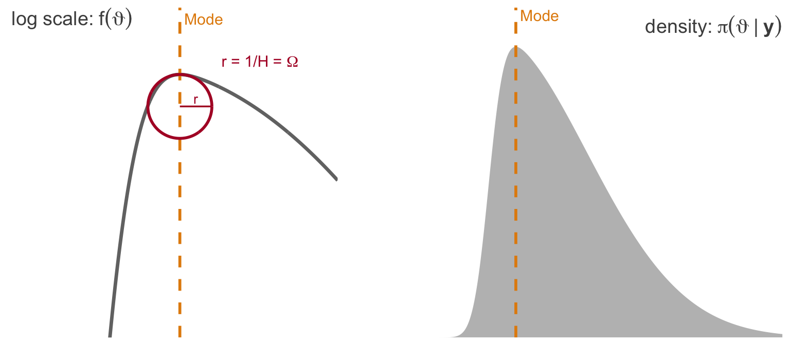
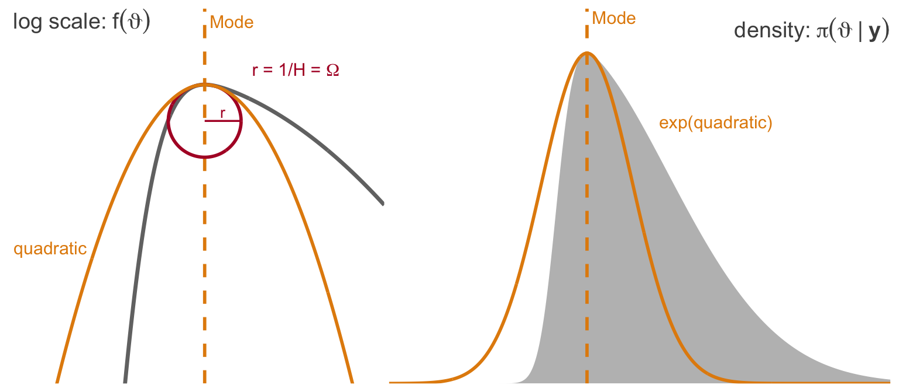
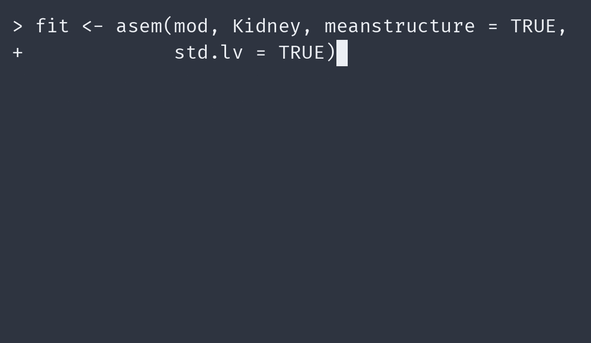
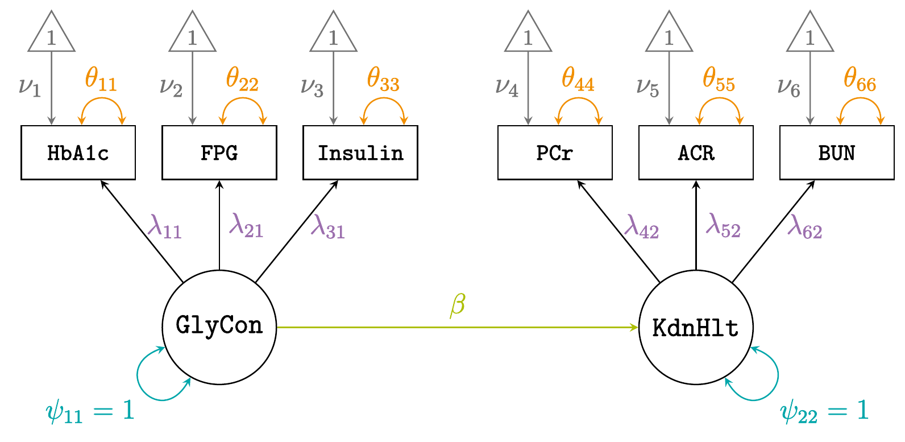

![]()

Approximate Bayesian inference for Structural Equation Models (SEM)
The INLA approach
October 8, 2026
Data context
In the social sciences, latent variables are used to represent constructs—the theoretical, unobserved concepts of interest.

Personality traits

Quality of life

Social trust

Competencies
PISA (cont.)

PISA uses 2PL item response theory (IRT) models to measure unobserved proficiency from item responses.
Estimation involves large-scale, multi-group calibration and latent population modelling, with incomplete forms and complex survey sampling.
Population inference uses plausible values (draws from students’ conditional proficiency posteriors), given fitted item and population parameters.
Covariance-based approach
Sample correlation matrix looks like this1:

- The data suggests clustering of variables
- \(y_1\),\(y_2\),\(y_3\) measure glycemic control (\(\texttt{GlyCon}\))
- \(y_4\),\(y_5\),\(y_6\) measure kidney health (\(\texttt{KdnHlt}\))
Easier to hypothesize relationships, e.g. \[ {\color{kaustmer}\texttt{KdnHlt}} = \alpha + \beta \, {\color{kaustblu}\texttt{GlyCon}} + \texttt{error} \]
But these are unobserved—we only see their footprint on the correlations: items in a cluster share a latent cause, and cross-cluster correlation flows through \(\beta\).
- SEM is about modelling the covariance structure of the data, \[ \boldsymbol\Sigma = \boldsymbol\Sigma(\boldsymbol\vartheta), \] where \(\boldsymbol\vartheta\) are model parameters.
MCMC-based estimation

Data augmentation Gibbs
\[ \small \pi(\boldsymbol\vartheta, \boldsymbol\eta \mid \mathcal Y) \propto \pi(\boldsymbol\vartheta) \prod_{s=1}^n \pi(\mathbf y_s \mid \boldsymbol\eta_s, \boldsymbol\vartheta)\, \pi(\boldsymbol\eta_s \mid \boldsymbol\vartheta) \]
Treat \(\boldsymbol\eta\) as unknowns to be sampled; likelihood simplifies.
But dimension scales with \(n\).
Marginal likelihood
\[ \small \pi(\mathcal Y \mid \boldsymbol\vartheta) = \prod_{s=1}^n \mathcal N_p\big(\mathbf y_s \mid \boldsymbol\mu(\boldsymbol\vartheta), \boldsymbol\Sigma(\boldsymbol\vartheta)\big) \]
where \[ \begin{align} \boldsymbol\mu(\boldsymbol\vartheta) &= \boldsymbol\nu + \boldsymbol\Lambda (\mathbf I - \mathbf B)^{-1} \boldsymbol\alpha \\ \boldsymbol\Sigma(\boldsymbol\vartheta) &= \boldsymbol\Lambda \boldsymbol\Phi \boldsymbol\Lambda^\top + \boldsymbol\Theta \\ \boldsymbol\Phi &:= (\mathbf I - \mathbf B)^{-1} \boldsymbol\Psi (\mathbf I - \mathbf B)^{-\top} \end{align} \]
Overview




Not quite R-INLA: This is a “bespoke” INLA for SEM, keeping only the ideas that carry over (Laplace, skew-normal marginals, VB correction).
Works because the exact posterior is cheap. For normal SEM, \(\pi(\mathbf y \mid \boldsymbol\vartheta)\) is closed form, so \(\pi(\boldsymbol\vartheta \mid \mathbf y)\) and its gradients are cheap to evaluate.
[Step 1a] Joint Gaussian approximation (cont.)




The R/INLAvaan package

Rows: 250
Columns: 6
$ y1 <dbl> 6.068916, 6.245611, 8.29265…
$ y2 <dbl> 5.849979, 6.869373, 7.71571…
$ y3 <dbl> 7.4694193, 14.1171527, 18.8…
$ y4 <dbl> 135.180599, 84.681048, 102.…
$ y5 <dbl> 46.316038, 86.787743, 64.94…
$ y6 <dbl> 7.510040, 6.820942, 11.0478…

Summary
- 🚀 INLA methodology offers a rapid alternative for SEM, delivering Bayesian results at near the speed of frequentist estimators.
- Not aiming to replace MCMC; use case is model development, testing, and exploratory analysis.
- Forward looking
- Non-Gaussian outcomes (e.g. categorical, count)
- Better prior support (priors for correlation matrices Freni-Sterrantino et al., 2026; penalised complexity priors Simpson et al., 2017)
- Dynamic SEM, including continuous-time SEM (Driver et al., 2017)
- Spatiotemporal extensions (Krainski et al., 2018)

- Vignettes and tutorials available on https://inlavaan.haziqj.ml/: Equality constraints, defined parameters, multigroup, multilevel, and missing data.